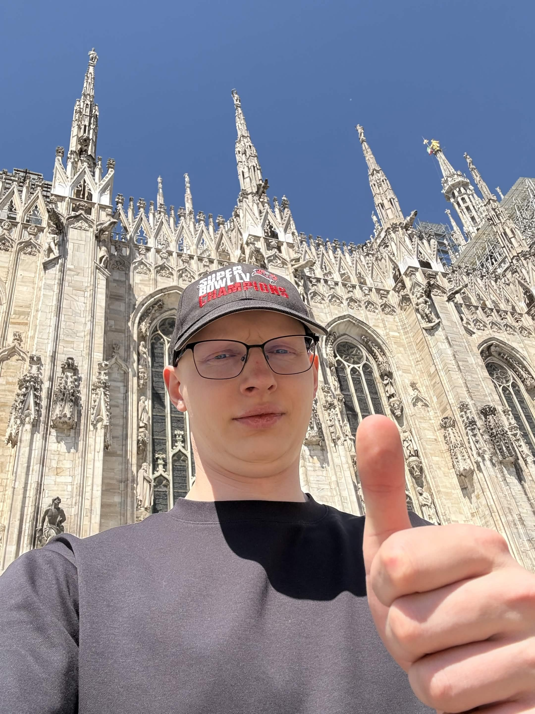

Full-stack
Adam Maciejczuk
Skleja silnik z interfejsem i pilnuje, żeby demo działało jedną komendą.
Biuro konstrukcyjne
Troje ludzi, jeden arkusz. Budujemy silnik, który myśli krokami — i każdy z tych kroków ktoś z nas trzyma w ryzach.
Full-stack
Skleja silnik z interfejsem i pilnuje, żeby demo działało jedną komendą.
Frontend
Odpowiada za arkusz, który właśnie oglądasz — od tokenów po dostępność z klawiatury.

LLM · evals
Trzyma model na krótkiej smyczy schematów, a jakość odpowiedzi mierzy metrykami, nie okiem.